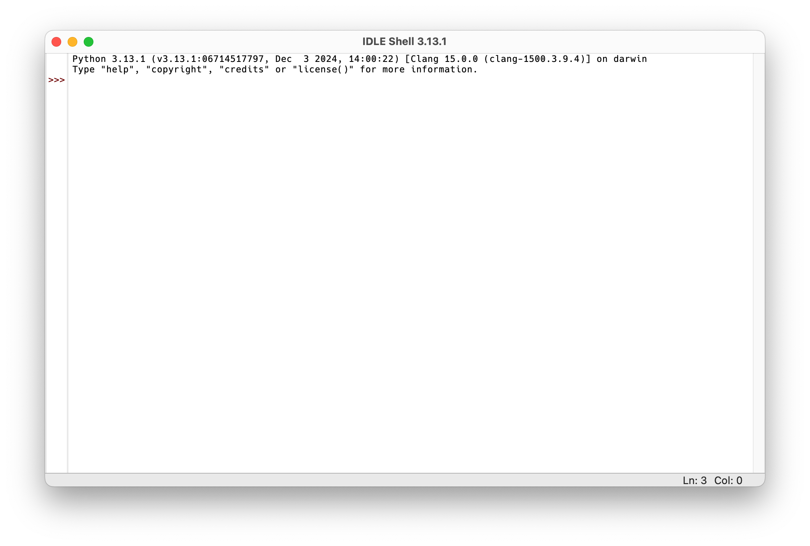
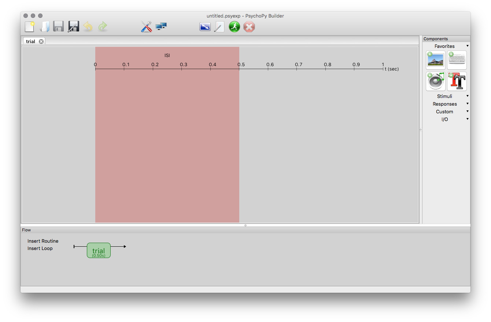
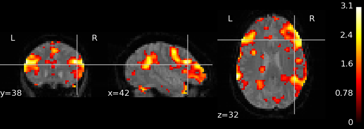
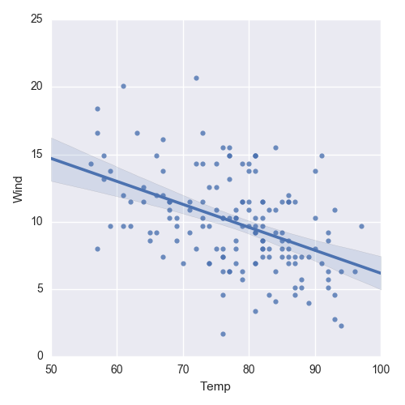
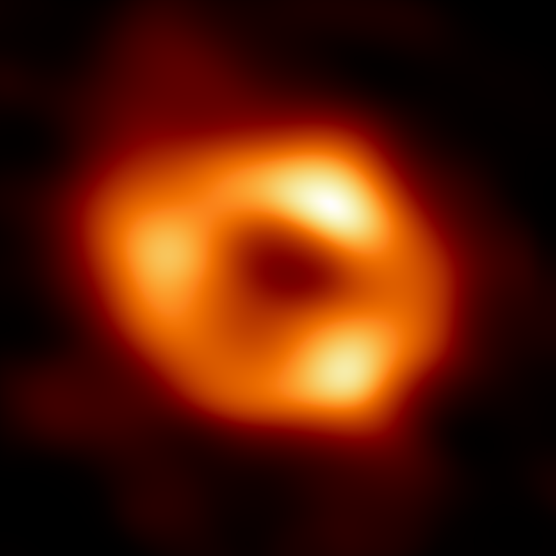

print("Hello World!")Hello World!Dieser Kurs vermittelt die Grundlagen der Programmiersprache Python. Zunächst werden die wichtigsten Elemente der Sprache wie Schleifen, Funktionen, Bedingungen und grundlegende Datentypen vorgestellt. Nach einer ausführlichen Behandlung dieser Grundlagen lernen Sie auch, wie man Python für die Datenanalyse verwenden kann. Dabei werden sehr grundlegende Themen wie das Einlesen von Textdateien, das Arbeiten mit numerischen Daten und das Erstellen einfacher Grafiken behandelt. Abschließend werden Sie mit dem in der Psychologie populären Python-Paket PsychoPy einfache Experimente erstellen.
Für diesen Kurs sind keinerlei Vorkenntnisse erforderlich. Sie werden die Grundlagen der Programmierung anhand praktischer Beispiele erlernen und können dieses Wissen anschließend auf die meisten anderen Programmiersprachen übertragen. Aufgrund der begrenzten Zeit werden nur grundlegende Python-Konzepte behandelt, aber diese bilden die Basis für alle weiterführenden Anwendungen. Sie werden somit ein solides Wissen über diese Grundlagen erwerben, um anschließend selbständig weiterführende Methoden zu erlernen.
Python ist eine universelle Programmiersprache, welche in vielen verschiedenen Anwendungsgebieten eingesetzt werden kann. Im Gegensatz dazu gibt es spezialisierte Programmiersprachen (wie z.B. R), welche für sehr spezifische Aufgaben entwickelt wurden. Beide Ansätze haben Vor- und Nachteile: Spezialisierte Programmiersprachen erlauben es oft, bestimmte Aufgaben schneller, besser oder eleganter zu lösen als universelle Programmiersprachen. Universelle Programmiersprachen sind dafür vielseitiger einsetzbar, was auch den Vorteil hat, dass man nicht unbedingt mehrere Programmiersprachen erlernen muss. Python deckt nicht nur Datenanalyse und Statistik ab, sondern auch komplett andere Anwendungen wie z.B. Webapplikationen, das Erstellen von Programmen mit grafischen Benutzeroberflächen oder auch das Programmieren des Raspberry Pi.
Wichtig ist auf jeden Fall, dass man sich vorher überlegt, welche Programmiersprache für ein gegebenes Problem geeignet ist, denn es gibt keine “beste” Programmiersprache, die für alle Anwendungsfälle optimal ist.

Python wird oft mit den folgenden Eigenschaften beschrieben:
Python wurde bereits 1991 von Guido van Rossum veröffentlicht und hat gerade in den letzten Jahren enorm an Popularität gewonnen. Bereits seit einiger Zeit ist Python die beliebteste bzw. meistverwendete Programmiersprache weltweit (siehe beispielsweise PYPL, TIOBE und IEEE Spectrum Top Programming Languages). Außerdem zeigt die Stack Overflow Developer Survey 2025, dass Python nach wie vor sehr stark wächst und sehr gefragt ist.
In der Praxis ist die Popularität einer Programmiersprache durchaus relevant, denn je größer und aktiver die Community einer Sprache ist, desto einfacher wird es, bestehende Lösungen für Probleme zu finden oder Antworten auf neue Fragen zu bekommen.
Im Folgenden sehen Sie einige Beispiele für Python-Code. Manche Befehle sind vielleicht intuitiv verständlich, andere wiederum können durchaus verwirrend wirken. Alle Beispiele werden aber im Laufe der Lehrveranstaltung erklärt, im Moment sollen diese nur der Veranschaulichung dienen.
Die grauen Kästchen zeigen Python-Befehle, unmittelbar darunter folgt das Ergebnis des jeweiligen Befehls.
print("Hello World!")Hello World!"only lowercase letters".upper()'ONLY LOWERCASE LETTERS'for i in range(10):
print(i, end=", ")0, 1, 2, 3, 4, 5, 6, 7, 8, 9, print(", ".join([str(i) for i in range(10)]))0, 1, 2, 3, 4, 5, 6, 7, 8, 9[k**2 for k in range(0, 100, 10)][0, 100, 400, 900, 1600, 2500, 3600, 4900, 6400, 8100]Die offizielle Python-Website enthält viele nützliche Informationen rund um Python. Im Download-Bereich findet man Installationspakete für Windows und macOS. Unter Windows installiert man den Python Install Manager, welchen man auch aus dem Microsoft Store beziehen kann. Weitere Informationen zur Verwendung von Python unter Windows finden Sie in der offiziellen Python-Dokumentation. Für weiterführende Informationen zur Verwendung von Python unter macOS lesen Sie bitte die offizielle Python-Dokumentation. Bei den meisten Linux-Distributionen ist Python bereits vorinstalliert, ansonsten kann man dieses sehr einfach über den Paketmanager der jeweiligen Distribution installieren.
Es ist sinnvoll, stets die neueste Python-Version zu verwenden.
Nachdem Sie Python installiert haben, können Sie den sogenannten Python-Interpreter starten. Dabei handelt es sich um ein Programm, welches Python-Befehle verstehen und verarbeiten kann. Man kann mit dem Python-Interpreter auch interaktiv arbeiten. Dies bedeutet, dass man einen Befehl eintippt und mit der Eingabetaste bestätigt. Danach wird der eingegebene Befehl direkt verarbeitet und das Ergebnis ausgegeben.
Es gibt viele Möglichkeiten, den Python-Interpreter zu starten. Eine der einfachsten Methoden ist die Verwendung von IDLE, einer einfachen Lernumgebung für Python, die mit der Python-Installation mitgeliefert wird. Nach dem Start von IDLE öffnet sich ein Fenster mit dem Titel IDLE Shell, in dem der interaktive Python-Interpreter läuft. Ein sogenannter Prompt (die Symbole >>>) zeigt an, dass der Interpreter bereit für Eingaben ist. Hier können wir also einen Python-Befehl eingeben und mit der Eingabetaste bestätigen. Der Interpreter verarbeitet den Befehl und gibt das Ergebnis (falls vorhanden) in der nächsten Zeile aus.

In den Kursunterlagen wird Python-Code immer in grauen Kästchen dargestellt. Der Prompt >>> wird dabei weggelassen, da er nicht Teil des Python-Codes ist.
Versuchen wir nun, mit Python einfache arithmetische Aufgaben zu lösen. Die Symbole für die vier Grundrechenarten sind + (Addition), - (Subtraktion), * (Multiplikation) und / (Division). Tippen Sie dazu die folgenden Befehle in die IDLE-Shell ein und bestätigen Sie jeweils mit der Eingabetaste:
1 + 1210 - 737 * 856120 / 717.142857142857142Aus Gründen der besseren Lesbarkeit sollten Leerzeichen vor und nach einem Operator eingefügt werden, also besser 10 - 7 und nicht 10-7. Für Python ist zwar beides korrekt, aber die erste Variante ist leichter lesbar.
Beachten Sie, dass Python die englische Zahlenschreibweise mit einem Punkt als Dezimaltrennzeichen verwendet und nicht das im deutschen Sprachraum übliche Komma. Dezimalzahlen müssen daher immer mit einem Punkt eingegeben werden, ganz egal welche Sprache im Betriebssystem eingestellt ist.
Die ganzzahlige Division hat einen eigenen Operator //, der aus zwei Zeichen besteht:
120 // 717Der ganzzahlige Rest einer Division wird mit dem Rest-Operator % berechnet:
120 % 71Potenzieren (also eine Zahl hoch eine andere Zahl) ist ebenso möglich:
2**6418446744073709551616Python kennt die Vorrangs- und Klammerregeln:
(13 + 6) * 8 - 12 / (2.5 + 1.6)149.0731707317073Wenn man mathematische Funktionen wie beispielsweise Sinus oder Kosinus verwenden möchte, muss man zuerst das math-Modul importieren (aktivieren). Dazu tippt man den folgenden Befehl ein:
import mathDanach kann man eine Vielzahl an mathematischen Funktionen und Konstanten verwenden, z.B. sqrt (Quadratwurzel), log (Logarithmus), sin (Sinus), cos (Kosinus) sowie Konstanten wie pi (die Kreiszahl \(\pi\)) oder e (Eulersche Zahl).
Wichtig ist, dass diese Funktionen und Konstanten immer mit einem vorangestellten math. verwendet werden müssen:
math.sqrt(2)1.4142135623730951math.pi3.141592653589793math.e2.7182818284590451 + math.sqrt(5) * 7 - 2 * math.pi * 1.2228.974423397125074In Python ist es notwendig, Module zu importieren, um deren Funktionen und Variablen verwenden zu können. Wir werden im Laufe dieses Kurses viele verschiedene Module importieren und verwenden.
Python wird heutzutage in vielen verschiedenen Bereichen verwendet. Um zu verdeutlichen, wie vielfältig man Python vor allem in der Forschung einsetzen kann, sind hier einige relevante Beispiele angeführt. Diese Auswahl ist jedoch bei weitem nicht vollständig und spiegelt vor allem meine persönliche Erfahrung wider.
PsychoPy ist ein Programm zur Präsentation von Stimuli für psychophysiologische Untersuchungen. Beispielsweise kann man mit PsychoPy Experimente erstellen, um Reaktionszeiten zu messen. Das Programm kann aber auch für fMRI- bzw. EEG-Untersuchungen verwendet werden, um die dort benötigten (visuellen bzw. auditorischen) Stimuli zeitpräzise zu präsentieren. PsychoPy kann über eine grafische Oberfläche bedient werden, aber spezielle Versuchsdesigns, die über die mitgelieferten Standardparadigmen hinausgehen, erstellt man am besten direkt mit Python-Code. Wir werden uns in den letzten beiden Einheiten mit PsychoPy beschäftigen.

Python ist sehr populär in den Neurowissenschaften. Auf der NIPY-Website (Neuroimaging for Python) haben sich einzelne Projekte zusammengeschlossen, welche spezifische Aufgaben im Bereich der Neurowissenschaften abdecken. Besonders viele Pakete gibt es für die Auswertung von fMRT-Daten. Hier gibt es z.B. NiBabel zum Einlesen verschiedenster Neuroimaging-Datenformate, Nipype zur einheitlichen Verwendung unterschiedlicher fMRT-Analyseprogramme, sowie NIPY, NiTime und Nilearn zur Analyse von fMRT-Daten.

MNE-Python kann man zur Analyse von EEG- bzw. MEG-Signalen verwenden. Es werden eine Vielzahl an Methoden unterstützt, welche in der Verarbeitung von elektrophysiologischen Gehirnsignalen eine Rolle spielen, wie z.B. Filterung, Artefaktbereinigung, Quelllokalisation und Konnektivitätsanalysen. Es gibt auch eine grafische Oberfläche names MNELAB.
Zur statistischen Auswertung von Daten gibt es in Python ebenfalls eine große Anzahl an Paketen. Besonders hervorzuheben sind hier NumPy, SciPy, Polars, pandas, statsmodels, Matplotlib, seaborn und scikit-learn. Einige dieser Pakete werden wir im Rahmen dieses Kurses kennenlernen (wenn auch nur sehr oberflächlich).

In Python kann man auch eigenständige Programme mit grafischen Oberflächen erstellen. Ein Beispiel dafür ist Spyder, eine Entwicklungsumgebung für Python, welche selbst komplett in Python geschrieben ist. Auch die grafischen Oberflächen von PsychoPy und MNELAB sind in Python geschrieben.
Zwei sehr prominente Beispiele dürfen an dieser Stelle nicht fehlen: das erste Bild eines schwarzen Lochs (im Zentrum der etwa 55 Millionen Lichtjahre entfernten Galaxie Messier 87) wurde mit Hilfe von Python erzeugt:

Auch bei der Visualisierung des schwarzen Lochs Sagittarius A* im Zentrum unser eigenen Galaxie wurde Python verwendet:

Installieren Sie Python auf Ihrem Rechner. Starten Sie dann den Python-Interpreter. Welche Version von Python meldet der Interpreter? Ist dies die aktuellste Version?
Tippen Sie im Python-Interpreter import antigravity ein. Was passiert? Was geschieht, wenn Sie import this eingeben? Was bewirkt import math?
Die Erde kann näherungsweise als Kugel mit einem Radius von 6371 km betrachtet werden. Berechnen Sie damit die Oberfläche der Erde! Die Formel für die Oberfläche \(A\) einer Kugel mit Radius \(r\) lautet:
\[A = 4 \pi r^2\]
Gegeben seien folgende Messwerte: 11, 27, 15, 10, 33, 18, 25, 22, 39, 11. Berechnen Sie den arithmetischen sowie den geometrischen Mittelwert (unter Verwendung von Grundrechenarten). Führen Sie die Berechnung mit jeweils einem einzigen Befehl (ohne Zwischenergebnisse) durch.
Die Formeln für den arithmetischen bzw. geometrischen Mittelwert lauten:
\[\bar x = \frac{1}{n} \sum_{i=1}^n x_i\]
\[\bar x_g = \sqrt[n]{\prod_{i=1}^n x_i}\]
Die n-te Wurzel kann man auch als Potenz anschreiben, also \(\sqrt[n]{x}\) ist gleichbedeutend mit \(x^\frac{1}{n}\).
Berechnen Sie das Ergebnis des folgenden Ausdrucks mit einem Befehl (in einer Zeile):
\[\frac{(5^5 - \pi) \cdot \frac{19}{3}}{\sqrt{13} + 7^\frac{2}{3}}\]
Achten Sie auf die Klammersetzung! Das richtige Ergebnis beträgt ungefähr 2722.
Warum funktioniert der folgende Befehl nicht (unter der Annahme, dass vorher import math ausgeführt wurde)?
math.Sqrt(4)